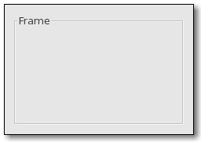

| GTK+ Reference Manual |
|---|
GtkFrameGtkFrame — A bin with a decorative frame and optional label |  |
#include <gtk/gtk.h>
GtkFrame;
GtkWidget* gtk_frame_new (const gchar *label);
void gtk_frame_set_label (GtkFrame *frame,
const gchar *label);
void gtk_frame_set_label_widget (GtkFrame *frame,
GtkWidget *label_widget);
void gtk_frame_set_label_align (GtkFrame *frame,
gfloat xalign,
gfloat yalign);
void gtk_frame_set_shadow_type (GtkFrame *frame,
GtkShadowType type);
const gchar* gtk_frame_get_label (GtkFrame *frame);
void gtk_frame_get_label_align (GtkFrame *frame,
gfloat *xalign,
gfloat *yalign);
GtkWidget* gtk_frame_get_label_widget (GtkFrame *frame);
GtkShadowType gtk_frame_get_shadow_type (GtkFrame *frame);
GObject +----GtkObject +----GtkWidget +----GtkContainer +----GtkBin +----GtkFrame +----GtkAspectFrame
"label" gchararray : Read / Write "label-widget" GtkWidget : Read / Write "label-xalign" gfloat : Read / Write "label-yalign" gfloat : Read / Write "shadow" GtkShadowType : Read / Write "shadow-type" GtkShadowType : Read / Write
The frame widget is a Bin that surrounds its child with a decorative frame and an optional label. If present, the label is drawn in a gap in the top side of the frame. The position of the label can be controlled with gtk_frame_set_label_align().
GtkWidget* gtk_frame_new (const gchar *label);
Creates a new GtkFrame, with optional label label. If label is NULL, the label is omitted.
| label : | the text to use as the label of the frame |
| Returns : | a new GtkFrame widget |
void gtk_frame_set_label (GtkFrame *frame, const gchar *label);
Sets the text of the label. If label is NULL, the current label is removed.
| frame : | a GtkFrame |
| label : | the text to use as the label of the frame |
void gtk_frame_set_label_widget (GtkFrame *frame, GtkWidget *label_widget);
Sets the label widget for the frame. This is the widget that will appear embedded in the top edge of the frame as a title.
| frame : | a GtkFrame |
| label_widget : | the new label widget |
void gtk_frame_set_label_align (GtkFrame *frame, gfloat xalign, gfloat yalign);
Sets the alignment of the frame widget's label. The default values for a newly created frame are 0.0 and 0.5.
| frame : | a GtkFrame |
| xalign : | The position of the label along the top edge of the widget. A value of 0.0 represents left alignment; 1.0 represents right alignment. |
| yalign : | The y alignment of the label. A value of 0.0 aligns under the frame; 1.0 aligns above the frame. |
void gtk_frame_set_shadow_type (GtkFrame *frame, GtkShadowType type);
Sets the shadow type for frame.
| frame : | a GtkFrame |
| type : | the new GtkShadowType |
const gchar* gtk_frame_get_label (GtkFrame *frame);
If the frame's label widget is a GtkLabel, returns the text in the label widget. (The frame will have a GtkLabel for the label widget if a non-NULL argument was passed to gtk_frame_new().)
void gtk_frame_get_label_align (GtkFrame *frame, gfloat *xalign, gfloat *yalign);
Retrieves the X and Y alignment of the frame's label. See gtk_frame_set_label_align().
| frame : | a GtkFrame |
| xalign : | location to store X alignment of frame's label, or NULL |
| yalign : | location to store X alignment of frame's label, or NULL |
GtkWidget* gtk_frame_get_label_widget (GtkFrame *frame);
Retrieves the label widget for the frame. See gtk_frame_set_label_widget().
| frame : | a GtkFrame |
| Returns : | the label widget, or NULL if there is none. |
GtkShadowType gtk_frame_get_shadow_type (GtkFrame *frame);
Retrieves the shadow type of the frame. See gtk_frame_set_shadow_type().
| frame : | a GtkFrame |
| Returns : | the current shadow type of the frame. |
"label-widget" GtkWidget : Read / Write
A widget to display in place of the usual frame label.
"label-xalign" gfloat : Read / Write
The horizontal alignment of the label.
Allowed values: [0,1]
Default value: 0.5
"label-yalign" gfloat : Read / Write
The vertical alignment of the label.
Allowed values: [0,1]
Default value: 0.5
"shadow" GtkShadowType : Read / Write
Deprecated property, use shadow_type instead.
Default value: GTK_SHADOW_ETCHED_IN
"shadow-type" GtkShadowType : Read / Write
Appearance of the frame border.
Default value: GTK_SHADOW_ETCHED_IN
| << Ornaments | GtkHSeparator >> |